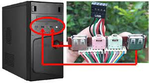
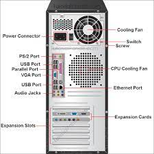

USB and Ports
USB (Universal Serial Bus)
USB (Universal Serial Bus) is a widely used interface standard that allows for easy and efficient connection of various peripheral devices to computers and other electronic devices. USB provides a standardized way to connect and communicate with a wide range of devices, such as keyboards, mice, printers, storage devices, cameras, and more.

Key features of USB include:
- Plug and Play: USB devices can be easily connected and disconnected from a computer without rebooting or manually configuring the system.
- Hot Swapping: USB devices can be safely connected or disconnected while the computer is running, without causing any damage or instability.
- Power Delivery: USB ports can provide power to connected devices, allowing them to operate without an external power source.
- Data Transfer: USB supports high-speed data transfer rates, allowing for efficient communication between devices and the host computer.
- Versatility: USB supports a wide range of device types, including input devices, storage devices, multimedia devices, and more.
There are different USB standards and versions, each offering varying data transfer rates and capabilities. Some common USB standards include USB 1.1, USB 2.0, USB 3.0, and USB 3.1/3.2.
Ports
Ports are physical interfaces on a computer or other electronic devices that allow for the connection of external devices and peripherals. There are various types of ports, each designed for specific purposes and supporting different standards and protocols.
Some common types of ports include:
- USB Ports: USB ports are used to connect a wide range of devices, such as keyboards, mice, printers, storage devices, and more. USB ports come in different shapes and sizes, including USB Type-A, USB Type-B, USB Type-C, and others.
- Video Ports: Video ports are used to connect external displays, such as monitors or projectors. Common video ports include HDMI, DisplayPort, DVI, and VGA.
- Audio Ports: Audio ports are used to connect speakers, headphones, microphones, and other audio devices. Common audio ports include 3.5mm jacks for headphones and microphones, as well as optical audio ports for digital audio connections.
- Network Ports: Network ports, such as Ethernet ports, are used to connect computers to local area networks (LANs) or the internet using wired connections.
- Thunderbolt Ports: Thunderbolt ports are high-speed interfaces that support data transfer, video output, and power delivery. They can be used to connect external storage devices, displays, and other peripherals.

The availability and placement of ports can vary depending on the specific computer or device model. It's essential to refer to the device's documentation or specifications to understand the types and locations of the available ports.
Importance of USB and Ports
USB and ports play a crucial role in modern computer systems and electronics, enabling users to easily connect and use a wide range of peripheral devices and accessories. USB's plug-and-play functionality and versatility have made it an industry-standard for device connectivity, while the availability of various ports allows for the connection of displays, audio devices, networks, and other specialized peripherals. Understanding USB and ports is essential for effectively utilizing and expanding the capabilities of computers and electronic devices.